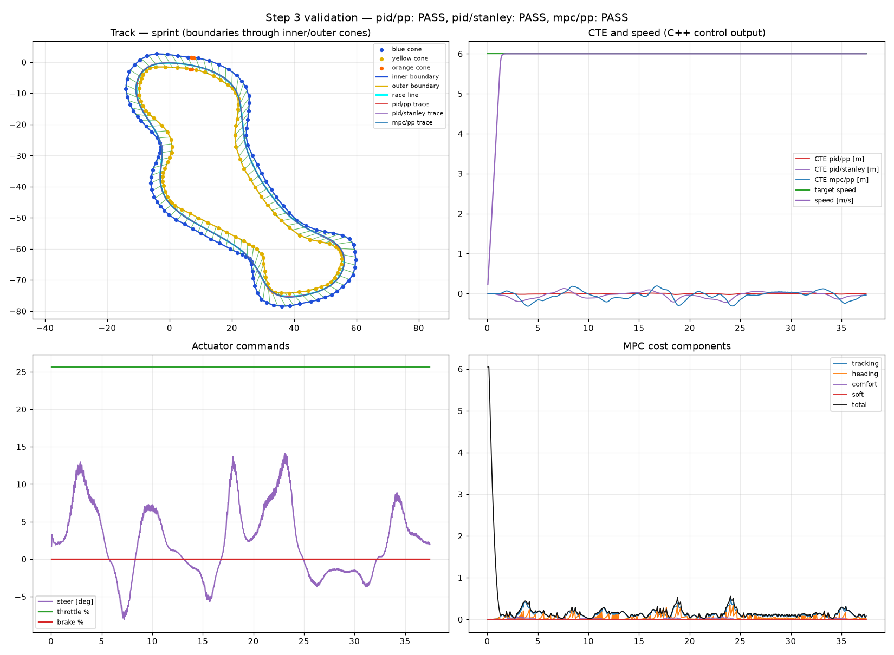
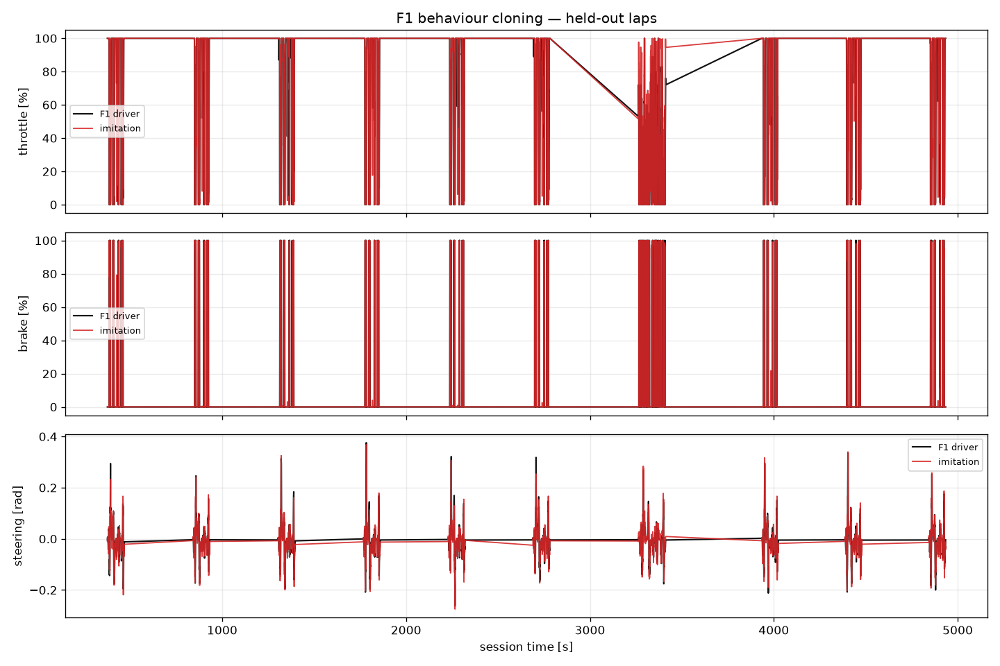
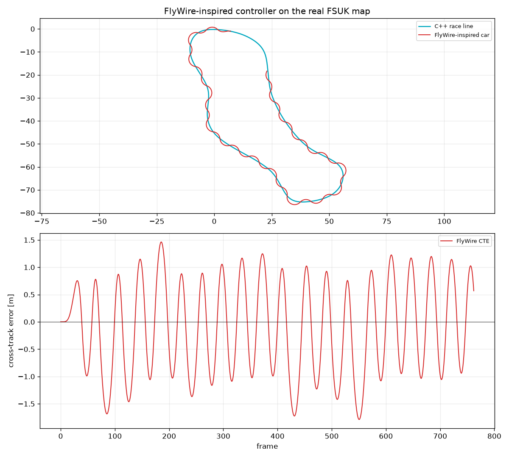

PID / MPC
0.025 / 0.317 mmax cross-track error on the real FSUK sprint line; 98/98 gates, loop yes.

THREE CONTROLLERS · THREE QUESTIONS
F1 imitation, FlyWire-inspired control and the model-based stack are not the same task. This page keeps the metrics separate and honest.
max cross-track error on the real FSUK sprint line; 98/98 gates, loop yes.

behaviour cloning on held-out Silverstone laps. Steering 0.0096 rad; brake 5.65 %.

Kenyon/CX-inspired surrogate on the same FSUK line; RMS 0.86 m, lap yes.

| Link | Task | Metric | Result |
|---|---|---|---|
| PID / pure pursuit | FSUK track following | max CTE | 0.025 m |
| MPC | FSUK track following | max CTE | 0.317 m |
| F1 imitation | held-out driver commands | throttle MAE | 5.61 % |
| F1 imitation | held-out driver commands | steering MAE | 0.0096 rad |
| FlyWire surrogate | FSUK track following | max CTE | 1.79 m |
The F1 model learns throttle/brake from a different track and is not a closed-loop planner. The FlyWire model is a subset-scale surrogate, not a 140k-neuron simulation. The PID/MPC numbers are closed-loop on the same FSUK geometry. The table is a map of evidence, not a leaderboard.